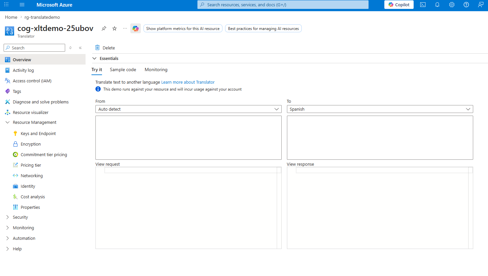
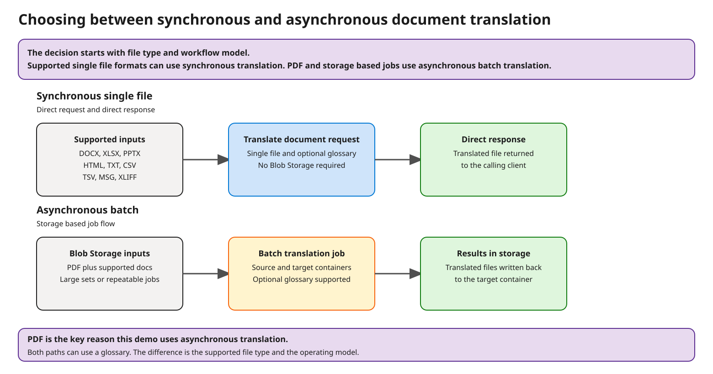
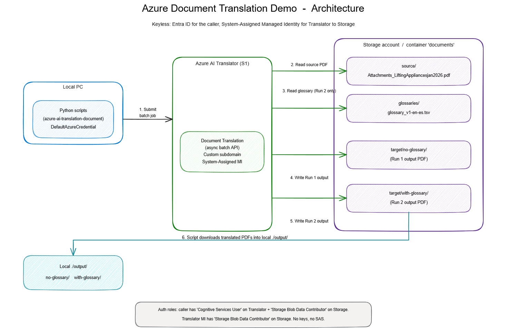

A practical language service for ABS content workflows
Azure AI Translator is a cloud based neural machine translation service that supports real time text translation, single file document translation, batch document translation, and deeper customization through custom models. For ABS, the most important question is not whether Translator can translate, but how it can fit into content operations while keeping maritime terminology consistent.
Business value
- Translator helps ABS move faster across languages without rebuilding the content pipeline.
- It can support lightweight use cases and governed enterprise workflows with the same service family.
- Glossaries provide a practical way to enforce preferred terminology before considering custom models.
Why start here
Translator offers a spectrum of options, from quick single document translation to batch document workflows with terminology control, security, and integration points for larger content operations.
Translator as an Azure service
This keeps the discussion concrete by showing the service where it is managed in Azure.

One service family, multiple paths depending on the content and workflow
The official Microsoft guidance separates Translator into text translation, document translation, and Custom Translator. Document translation itself supports both synchronous single file translation and asynchronous batch translation.
Choose the workflow
Real time text, single file document translation, or batch translation across many files.
Send content to Translator
Use REST APIs, SDKs, or Foundry for supported scenarios. Batch workflows use Blob Storage.
Apply control layers
Use glossary for term control. Use custom models when baseline plus glossary is still not enough.
Return translated output
Preserve document layout where supported, then pass translated output into review and publishing.
Synchronous and asynchronous translation paths
The clearest way to explain the service choice is to compare the two operating models directly. If the source is a supported single file format and you want a direct response, synchronous works well. If the source is a PDF, storage based, or part of a broader job flow, asynchronous batch is the right path.

Synchronous document translation
Best for a single document and well suited to proof of value examples when the source is a supported single file format such as DOCX, XLSX, PPTX, HTML, TXT, CSV, TSV, MSG, or XLIFF. The request includes one file and can include an optional glossary. No Blob Storage account is required, and the translated file returns directly in the response.
Asynchronous batch document translation
Best for production scale and also the right path for file types that fall outside the synchronous list, most notably PDF. Source files live in Blob Storage, translation runs as a job, and outputs land in target containers. This is the better fit for large document sets, PDF workflows, or CMS export based workflows.
What this means for ABS
The file type matters. Synchronous single file translation is the cleanest path when the source is in the supported single file list, while batch translation is the right choice for broader production workflows and for PDF based scenarios like this demo.
Why the demo uses asynchronous translation
The current proof of value uses a PDF excerpt from the ABS source material. Because PDF translation sits on the batch document translation path, the demo uses asynchronous translation even though the core story is still glossary driven terminology control.
Map the capability to the scenario
Not every translation need should be solved the same way. The value comes from choosing the simplest option that meets the accuracy and workflow need.
| Capability | What it does | Best fit | Relevance for ABS |
|---|---|---|---|
| Text translation | Real time translation of text via API. Supports detect, transliterate, and dictionary operations. | Apps, workflow automation, short text, live experiences | Good for app experiences or content fragments, rather than the primary PDF comparison scenario |
| Document translation, single file | Translate one file and return the translated document directly. Can include a glossary. | Demo, ad hoc file translation, simple user workflows | Useful for proof of value, ad hoc file translation, and quick operational examples |
| Document translation, batch | Translate many files asynchronously while preserving structure and format. | Large document sets, export based localization, repository scale jobs | Best longer term option for governed ABS translation operations |
| Glossary | Apply source to target terminology control during document translation. | Known terminology, branded language, domain specific vocabulary | Fastest way to improve ABS maritime terms without model training |
| Custom Translator | Build custom neural translation systems for domain specific language, terminology, and style. | When baseline plus glossary still falls short and enough data exists | Potential future phase, not the first answer for this discussion |
Use the right control layer for the right accuracy problem
The customer should leave understanding that Azure AI Translator already delivers strong baseline translation, and that there are different levers for improving output depending on the nature of the issue.
Baseline neural translation
Best starting point for general language quality. This is the default system used as the baseline for comparison.
- Useful for general meaning and speed to value
- Good enough for many broad content scenarios
- May not pick the preferred industry term every time
Glossary driven term control
Best when the challenge is preferred terminology. Microsoft guidance for document translation supports glossary files such as TSV, CSV, and XLIFF.
- One to one source to target language translation
- Useful for technical vocabulary, product names, and ambiguous words
- Case sensitive by default, so source matching matters
Custom Translator
Best when the issue is larger than a term list, such as domain style, sentence patterns, or recurring phraseology.
- Requires curated training data and governance
- More effort than a glossary
- Good follow on phase if glossary alone is not enough
What glossary control addresses
Glossary control improves consistency for preferred terminology. It is the right lever when important domain terms need to be translated in a governed and repeatable way.
Illustrative ABS proof points
- loose gear → accesorios de izado
- sheaves → roldanas
- Repeated technical terms are where the glossary story lands best
What this approach provides
- More consistent handling of important domain terms
- A fast and practical tuning lever for this use case
- A foundation that can later be extended with custom models if needed
Show that this can start small and still fit enterprise expectations
The service is not just for experiments. Microsoft documents supported enterprise patterns for authentication, storage authorization, network isolation, data residency, logging, and secure deployment.
Scalability
- Batch document translation supports numerous files and larger workflows.
- Batch jobs use source and target Blob Storage containers.
- Layout and document structure are preserved for supported formats.
Security and access
- Text translation supports resource key, bearer token, and Microsoft Entra ID authentication.
- Batch document translation can use SAS tokens or managed identities to reach storage.
- Azure Key Vault is the right place for secret handling and key rotation.
Network and compliance
- Private endpoints, firewalls, and region specific endpoints are available patterns.
- Data residency depends on the Azure region used for the resource.
- Containers are an option for more isolated or offline scenarios.
Enterprise fit
This can begin as a targeted language service for a single workflow and still be deployed with the identity, storage, network, and monitoring controls expected in an enterprise Azure environment.
Human oversight
Microsoft guidance also supports the practical reality that sensitive translations should include human review. That is especially useful for customer facing, regulated, or safety relevant content.
An illustrative way to show terminology control in practice
The current excerpt is stronger because it is more glossary centric. The comparison works best when it emphasizes repeated technical term control across the same source content, and it also gives a clean reason to explain why this demo runs as an asynchronous PDF translation workflow.
Example comparison flow
- Use the same PDF excerpt, target language, and translation service in both runs.
- Because the source is a PDF, submit both runs through asynchronous batch document translation.
- Run one shows baseline Translator output with no glossary.
- Run two adds a domain glossary for ABS terminology.
- The comparison shows how preferred terms become more consistent.
Illustrative implementation detail
A glossary path parameter keeps the workflow reusable and makes the changed input explicit, while the document type explains why the demo uses the asynchronous path.
Illustrative request path
This is the practical flow behind the demo. The repo runs the same PDF excerpt through the same target language and the same service twice, then compares the outputs after the glossary is introduced on the second run. Public repo: github.com/MaxBush6299/translate_demo

Illustrative terms from the ABS glossary
- loose gear
- sheaves
- proof testing
- wire ropes
What the comparison demonstrates
The practical value of a glossary is not full retraining of the system. It is the addition of a governed terminology layer so the terms that matter most are translated in a more consistent and preferred way.
Where this can extend next
If this approach looks promising, the next conversation shifts from whether translation is possible to where ABS wants to apply it first: ad hoc files, repeatable document sets, or a broader content workflow.
Selected Microsoft Learn references
The content in this presentation was grounded in current Microsoft Learn documentation for Azure AI Translator.
| Topic | Reference |
|---|---|
| Translator overview | learn.microsoft.com/azure/ai-services/translator/overview |
| Document translation overview | learn.microsoft.com/azure/ai-services/translator/document-translation/overview |
| Text translation overview | learn.microsoft.com/azure/ai-services/translator/text-translation/overview |
| Glossary guidance | learn.microsoft.com/azure/ai-services/translator/document-translation/how-to-guides/create-use-glossaries |
| Security guidance | learn.microsoft.com/azure/ai-services/translator/secure-deployment |